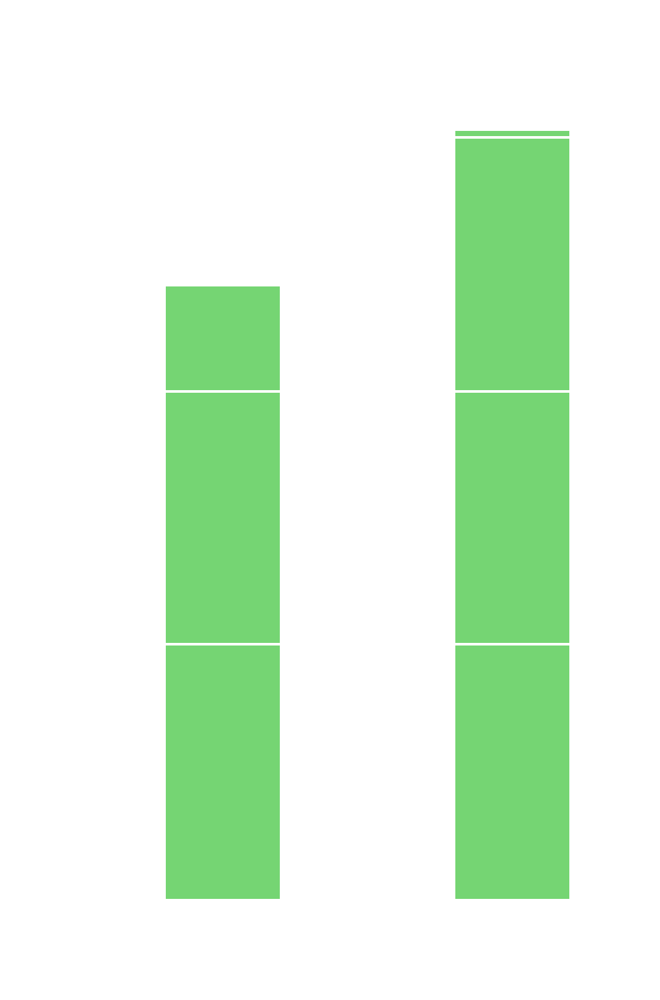

when choosing the specific machine on which to run your software a lot of attention should be dedicated to finding the resource with the right amount of computing power and energy efficiency
running on more energy efficient hardware is not always beneficial
more energy efficient processors 
{insert charlote-david graviton study findings}
running on the most efficient hardware is not always beneficial
{}
most likely the most optimal solution from a sustainability perspective lies somewhere in between